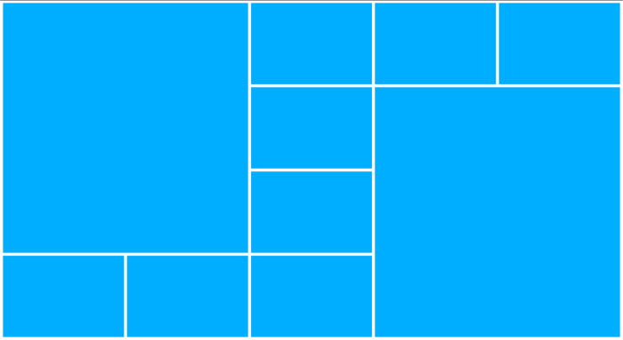

CSS Grid
목차
- grid?
- fr?
- gird box 속성
- grid item 속성
- flexbox와 grid
- 브라우저 지원현황
grid?
- 줄과 칼럼을 동시에 제어하고 배치할 수 있다.
- 그리드는 수평선과 수직선이 교차해서 이루어진 집합체.
- 하나의 집합체는 세로 열을 그리고 다른 하나는 가로 행을 정의. 각 요소는 이러한 열과 행으로 된 라인을 따라 생성된 그리드에 배치할 수 있다.
fr(fraction)
- 사전적의미 : 부분,일부,분수 ...
- fr 단위는 유연한 단위로 그리드 컨테이너의 여유 공간을 비율로 나눠 설정합니다.
grid box 속성들
grid를 선언한 껍데기(부모)와 그의 자식모델 item들로 구분된다.

display: grid
.grid {display: grid;}.grid {display: inline-grid;}example : grid.html
grid-auto-flow
- 기본값은row.
- value : row , column
- 그리드 컨테이너의 왼쪽 위부터 아이템이 배치되며 오른쪽으로 칸을 채워 나가고 한 줄이 다차면 다음 줄을 채워 나갑니다.
.grid { grid-auto-flow: column; }example : grid-auto-flow.html
grid-auto-columns
grid-auto-rows
- 암시적으로 생성된 격자 열,행 트랙의 크기를 지정합니다.
- value : auto , fr, min-content, minmax(min,max)
.grid { grid-auto-columns: 50px; }example : grid-auto-columns.html
grid-template-areas
- 명명 된 격자 영역을 지정합니다.
- value : none, <string>
.grid { grid-template-areas: none; }.grid { grid-template-areas:
"a b"
"a b b"
"a c d"; }
.grid .item1 { grid-area: a; }example : grid-template-areas.html
grid-template-columns
grid-template-rows
- 격자 행,열의 선 이름과 트랙 사이징 기능을 정의합니다.
- value : none, length, percentage, min-content, minmax(min,max), auto, fit-content, repeat ...
.grid { grid-template-columns: repeat(4, 1fr); }example : grid-template-columns-rows.html
grid-template
- 격자 열, 행 및 영역을 정의하기위한 속기 속성입니다.
- value : none, grid-template-rows / grid-template-columns
.grid { grid-template: repeat(3,1fr) / repeat(2,1fr); }
.grid { grid-template: "a a a" 50px / 1fr 1fr 1fr;}
.grid .a {grid-area: a;}
example : grid-template.html
grid-gap
grid-column-gap
grid-row-gap
- 행과 열 사이의 간격을 설정합니다
- value : length, percentage
.grid { grid-gap: 10px; }.grid { grid-column-gap: 10px; }.grid { grid-row-gap: 10px; }example : grid-gap.html
justify-items
- 적절한 축을 따라 각 상자를 정렬하는 기본 방법을 모두 제공합니다.
- value : stretch, center, start, end ...
.grid { justify-items: stretch; }example : justify-items.html
align-items
- grid 레이아웃에서는 격자 영역 내에서 블록 축의 항목 정렬을 제어합니다.
- value : stretch, center, start, end ...
.grid { align-items: center; }example : align-items.html
grid items 속성들
display: grid;로 선언된 요소의 하위요소들(자식)에 선언가능한 속성들.
grid-column-start
grid-column-end
- 그리드 열 내의 그리드 항목의 시작과 끝 위치를 지정.
- value : auto, <integer>, <custom-indent>, span
.item1 { grid-column-start: auto; }.item1 { grid-column-end: auto; }example : grid-column-start-end.html
grid-row-start
grid-row-end
- 그리드 항목의 행의 시작과 끝 위치를 지정.
- value : auto, <integer>, <custom-indent>, span
.item1 { grid-row-start: auto; }.item1 { grid-row-end: auto; }example : grid-row-start-end.html
grid-area
- 속기속성(grid-row-start, grid-column-start, grid-row-end and grid-column-end 값을 한번에 설정)으로, 그리드 항목의 크기와 위치를 제공하여 지정.
- value : auto, <integer>, <custom-indent>, span
.item1 { grid-area: auto / auto; }.item1 { grid-area: header; }.item1 { grid-area: span 3; }example : grid-area.html
grid-column
grid-row
- 격자 선의 범위, 선 또는 범위를 격자 선 배치에 기여하여 그리드 항목의 크기와 위치를 지정.
- 그리드 행의 크기와 위치를 그리드 행 시작 및 그리드 행 끝의 축약 속성으로 지정.
- value : auto, <integer>, <custom-indent>, span
.item1 { grid-column: 2 / 5; }.item1 { grid-row: 1 / 3; }example : grid-column-row.html
justify-self
- 해당 축을 따라 정렬 컨테이너 내부에서 상자가 정렬되는 방식을 설정합니다.
.item1 { justify-self: start; }example : justify-align-self.html
align-self
- 블록 축의 항목 정렬을 제어합니다.
.item1 { align-self: center; }example : align-self.html
flexbox와 grid
- 플랙스박스는 한 줄로 된 행 혹은 열 방향의 레이아웃과 같이 일차원의 레이아웃을 염두에 두고 설계되었다는 점입니다. 하지만, 그리드는 행과 열 모두를 염두에 둔 2차원적 레이아웃을 고려해서 설계되었습니다.
- 레이아웃을 조정할 때 오직 가로 행 혹은 세로 열 만이 고려 대상이라면 – 플랙스박스를 사용하십시오
- 레아아웃을 조정할 때 가로 행과 세로 열 모두를 염두에 두어야 한다면 – 그리드를 사용하십시오
example: flex-grid.html